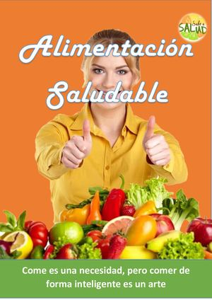

Welcome to
#SanosEnCasa: alimentación saludable
2021.06.02 14:34
Sitio web mundial Sitios web regionales Sitios web regionales de la OMS Región de África Región de las Américas Región de Asia Sudoriental Región de Europa Región del Mediterráneo Oriental Región del Pacífico Occidental When autocomplete results are available use up and down arrows to review and enter to select. Elegir idioma Elegir idioma English العربية 中文 Français Русский Español Acceso Temas de salud Temas de salud A B C D E F G H I J K L M N O P Q R S T U V W X Y Z Temas populares » Seguridad de los vehículos de motor de dos y tres ruedas Hepatitis Las 10 principales causas de defunción Salud materna Salud de los adolescentes Salud del niño Salud ambiental Fiebre amarilla Tabaco y enfermedades cardiovasculares Países Buscar un país A B C D E F G H I J K L M N O P Q R S T U V W X Y Z Presencia de la OMS en los países » Actividades Estrategias y redes de apoyo Regiones » Región de África Región de las Américas Región de Asia Sudoriental Región de Europa Región del Mediterráneo oriental Región del Pacífico occidental Informe anual: Crisis Siria Centro de prensa Centro de prensa Comunicados de prensa Declaraciones Notas para los medios informativos Comentarios Reportajes Preguntas y respuestas Eventos Titulares UNICEF Belize
Although 20% of the population of Belize is aged between 10 and 19, adolescents are underserved by the healthcare system. © Imagen Datos y análisis para los ODS relativos a la salud Emergencias Emergencias » Nigeria Yemen Noticias Crisis y situaciones de emergencia Diez cuestiones de salud que la OMS abordará este año Noticias sobre brotes de enfermedades Brotes epidémicos 10 amenazas a la salud mundial Acerca de la OMS Acceso Países Centro de prensa Emergencias Acerca de la OMS Publicaciones Comunicados de prensa Campañas mundiales de salud pública de la OMS Viajes internacionales y salud Cobertura sanitaria universal Acceso Países Centro de prensa Emergencias Acerca de la OMS Publicaciones Comunicados de prensa Campañas mundiales de salud pública de la OMS Viajes internacionales y salud Cobertura sanitaria universal Acceso Países Centro de prensa Emergencias Acerca de la OMS Publicaciones Comunicados de prensa Campañas mundiales de salud pública de la OMS Viajes internacionales y salud Cobertura sanitaria universal Acceso Países Centro de prensa Emergencias Acerca de la OMS Publicaciones Comunicados de prensa Campañas mundiales de salud pública de la OMS Viajes internacionales y salud Cobertura sanitaria universal Acerca de la OMS Acerca de la OMS » Quiénes somos Nuestras actividades Dónde trabajamos Director General Contacto » Gobernanza » Asamblea Mundial de la Salud Consejo Ejecutivo Planificación, finanzas y rendición de cuentas » Planificación, finanzas y rendición de cuentas » Acceso / Campañas mundiales de salud pública de la OMS / #SanosEnCasa / #SanosEnCasa: alimentación saludable
#SanosEnCasa: alimentación saludable
Una alimentación saludable es muy importante durante la pandemia de COVID-19. Lo que comemos y bebemos puede afectar a la capacidad de nuestro organismo para prevenir y combatir las infecciones y para recuperarse de ellas.
Aunque ningún alimento ni suplemento dietético puede prevenir ni curar la COVID-19, una alimentación saludable es importante para el buen funcionamiento del sistema inmunitario. La nutrición adecuada también puede reducir la probabilidad de aparición de otros problemas de salud como la obesidad, las enfermedades del corazón, la diabetes y algunos tipos de cáncer.
En el caso de los bebés, una alimentación saludable implica lactancia materna exclusiva durante los 6 primeros meses, con la introducción gradual de alimentos nutritivos y seguros como complemento de la leche materna desde los 6 meses hasta los 2 años y más. En los niños pequeños, una alimentación sana y equilibrada es esencial para el crecimiento y el desarrollo. En el caso de las personas mayores, puede ayudarles a llevar una vida más saludable y activa.
Consejos para una alimentación saludable:
1. Consuma alimentos variados, incluidas frutas y verduras
• Coma todos los días una combinación de cereales integrales como trigo, maíz o arroz, legumbres como lentejas o frijoles (judías), verduras y frutas frescas en abundancia, y algún alimento de origen animal, por ejemplo carne, pescado, huevos o leche.
• Siempre que pueda, elija cereales como maíz, mijo, avena, trigo o arroz integrales, no procesados: son ricos en fibra beneficiosa y proporcionan una sensación de saciedad más duradera.
• Como refrigerio entre horas, tome hortalizas crudas, fruta fresca o frutos secos sin sal.
2. Reduzca el consumo de sal
• Limite el consumo de sal a 5 gramos diarios (equivalentes a una cucharadita).
• Al cocinar y preparar la comida, emplee poca sal y reduzca el uso de salsas y condimentos salados (como la salsa de soja, el caldo de carne o la salsa de pescado).
• Si consume alimentos enlatados o desecados, elija hortalizas, frutos secos y frutas sin sal ni azúcar añadidas.
• Retire el salero de la mesa y pruebe en cambio a dar más sabor a los platos con hierbas y especias frescas o secas.
• Consulte las etiquetas de los alimentos envasados y elija los productos con menor contenido de sodio.
3. Consuma cantidades moderadas de grasas y aceites
• Al cocinar, sustituya la mantequilla, el ghee o la manteca de cerdo por grasas más saludables como el aceite de oliva, de soja, de girasol o de maíz.
• Consuma preferentemente aves y pescado, que por lo general contienen menos grasa que la carne de ternera, cordero o cerdo; aparte la grasa visible y limite el consumo de carnes procesadas.
• Tome leche y productos lácteos desnatados o semidesnatados.
• Evite los alimentos procesados, horneados y fritos que contengan grasas trans de producción industrial.
• Pruebe a hervir los alimentos o cocinarlos al vapor en lugar de freírlos.
4. Limite el consumo de azúcar
• Limite el consumo de golosinas y de bebidas que contengan azúcar como refrescos, jugos de fruta y bebidas a base de jugo, concentrados líquidos y en polvo, aguas aromatizadas, bebidas energéticas y deportivas, té o café listos para beber y bebidas lácteas aromatizadas.
• Coma fruta fresca en lugar de dulces como galletas, pasteles y chocolate. Si toma un postre que no sea fruta, asegúrese de que contenga poco azúcar y sírvase porciones pequeñas.
• No dé alimentos dulces a los niños. No se debe añadir sal ni azúcar a la alimentación complementaria hasta los 2 años, y a partir de esa edad solo se debe hacer en cantidades limitadas.
5. Mantenga una buena hidratación bebiendo suficiente agua
Una buena hidratación es crucial para una salud óptima. Siempre que se disponga de ella y que sea apta para el consumo, el agua del grifo es la bebida más saludable y económica. Tomar agua en lugar de bebidas azucaradas es una forma sencilla de limitar el consumo de azúcar y evitar un exceso de calorías.
6. Evite un consumo peligroso y nocivo de alcohol
Las bebidas alcohólicas no forman parte de una alimentación saludable. Su consumo no protege contra la COVID-19 y puede ser peligroso. El consumo frecuente o excesivo de alcohol aumenta el riesgo inmediato de lesiones, además de provocar efectos a más largo plazo como daños en el hígado, cáncer, enfermedades del corazón y trastornos mentales. No existe un nivel seguro de consumo de alcohol.
7. Practique la lactancia materna
La leche materna es el alimento ideal para los bebés. Es segura y limpia y contiene anticuerpos que ayudan a proteger frente a muchas enfermedades infantiles frecuentes. Los bebés deben recibir lactancia materna exclusiva durante los primeros 6 meses de vida, ya que la leche materna les proporciona todos los nutrientes y el líquido que necesitan.
• A partir de los 6 meses, la leche materna se debe complementar con alimentos variados que sean adecuados, seguros y ricos en nutrientes. La lactancia materna debe mantenerse hasta los 2 años de edad o más.
Las mujeres con COVID-19 pueden amamantar a sus hijos si lo desean, adoptando las oportunas medidas de prevención y control de infecciones. Consulte las preguntas y respuestas sobre la COVID-19 y la lactancia materna .
Consejos sobre inocuidad de los alimentos durante la pandemia de COVID-19
No se ha demostrado que la COVID-19 pueda contagiarse por el contacto con los alimentos o sus envases. En general, se cree que la COVID-19 se transmite de persona a persona. Sin embargo, siempre es importante mantener una buena higiene al manipular la comida para evitar cualquier enfermedad transmitida por los alimentos.
Siga las cinco claves de la OMS para la inocuidad de los alimentos:
Mantenga la limpiezaSepare los alimentos crudos de los cocinados C ocine completamente los alimentos Mantenga los alimentos a temperaturas seguras Use agua y materias primas seguras.
Preguntas y respuestas sobre la inocuidad de los alimentos y nutrición en relación con la COVID-19
Section navigation
#SanosEnCasa #SanosEnCasa: alimentación saludable #SanosEnCasa – Dejar el tabaco #SanosEnCasa – Salud mental #SanosEnCasa – Actividad físicaPreguntas y respuestas
Repercusiones de la pandemia de COVID-19 en la alimentación y la agricultura
La pandemia está afectando a los sistemas alimentarios mundiales, trastornando las cadenas de valor agrícolas regionales y poniendo en riesgo la seguridad alimentaria de los hogares.
Lea más Acerca de la OMS Director General Asamblea Mundial de la Salud Consejo Ejecutivo Estados Miembros Ayuda y servicios Preguntas frecuentes Oficinas regionales de la OMS Región de África Región de las Américas Región de Asia Sudoriental Región de Europa Región del Mediterráneo Oriental Región del Pacífico Occidental Política de privacidad © 2021 OMS